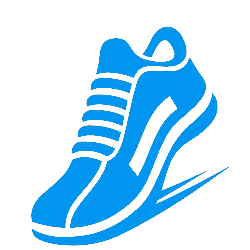
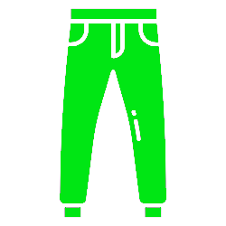

Čo to je
Parkour je tréningová metóda, pomocou ktorej sa dokáže Traceur pohybovať v členitom
prostredí mestskej architektúry, či prírody. Traceur je človek, ktorý praktikuje zručnosti
parkouru a zároveň sa správa podľa jeho filozofie. Pozostáva z množstva rôznych prvkov, ktoré
spadajú do niekoľkých kategórií. Vo všeobecnosti sa parkour nechápe ako šport, alebo hra. Parkour
je viac o individuálnosti a rozvoja svojho tela a mysle osamote, sám za seba.
David Belle
David Belle sa považuje za zakladateľa parkouru, hoci je známe, že myšlienka prekonávať prekážky
vznikla oveľa skôr. Zásluhy za objavenie parkouru sa mu pripisujú preto, lebo vzal jednoduchú predstavu
a vniesol do nej filozofiu, čím z nej spravil umenie premiestňovania. Takto sa zrodilo prvé umenie
pohybu zvané Ĺ art du Deplacement. Neskôr bolo premenované na Parcour z francúzskeho
Parcours du combattant, no kvôli výslovnosti sa C
zmenilo na K
.
Z histórie
Keď som povedal, že myšlienka prekonávať prekážky vznikla ešte pred objavením parkouru, bolo to oveľa
skôr. Presnejšie za 1. svetovej vojny. V tej dobe vo Francúzsku nutne potrebovali dobre vycvičených
vojakov. Vtedy prišiel na rad Georges Hébert. Inšpirovaný tým, s akou ľahkosťou sa domorodci v Afrike
dokážu pohybovať v prírode vytvoril Prirodzenú metódu, čo bol návrh tréningovej metódy pre francúzskych
vojakov, na zlepšenie ich fyzickej zdatnosti. Neskôr ňou začali trénovať aj hasičov a policajtov. Jedným
z nich bol aj Raymond Belle, otec Davida. Z toho vyplýva, že David bol odmalička vychovávaný v duchu
prirodzenej metódy.
Parkour vs. Freerun
Hoci si to väčšina ľudí v dnešnej dobe mýli, Parkour a Freerun nie sú jedna a tá istá vec. Je medzi nimi
podstatný rozdiel. Tu sa dostávajú do popredia dve osoby. David Belle a Sábastien Foucen. Obaja boli
členmi parkourovej skupiny Yamakasi. David vytvoril parkour, metódu založenú na prekonávaní prekážok
a Sébastien vytvoril Freerun, metódu sebavyjadrovania prostredníctvom akrobacie. Dôvodom ich častej zámeny
je pravdepodobne to, že väčšina moderných Traceurov ovláda aj Freerun, ale prezentujú sa len ako parkouristi a Freerun
berú len ako anglický výraz pre Parkour.
Obuv

Na parkour je dôležitá najmä pevná a pohodlná obuv. Musí byť vzdušná, aby sme sa cítili pohodlne.
Podrážka nesmie byť veľmi tenká, aby sme necítili každú nerovnosť povrchu, ale ani hrubá, lebo pri
silnejšom dopade by sme si mohli poraniť členok. zároveň by podrážka nemala byť veľmi vzorovaná, skôr
hladká, aby dobre priliehala na povrch.
Tepláky

Modená parkourová móda sa od tej oldschoolovej
výrazne líši. Dnešní traceuri preferujú klasické
tepláky, alebo modely, ktoré sú na členkoch obtiahnuté a na stehnách a rozkroku sú voľné, alebo tepláky
s extrémne nízkym sedom. Ja mám pri tréningu najradšej tie staré klasické, ktoré majú veľmi široké nohavice
a vyšší sed.
Tričko

Tričko je asi najmenej potrebným prvom vo výbave parkouristu, pretože sa dá skákať aj bez neho. Ak ho však
máte radi na sebe, tak v obrázku nájdete odkaz na obchod s parkour tričkami. Výber je ozaj parádny, takže
si každý príde na svoje. Majú taktiež aj pestrú ponuku tielok a mikín. Ak sa radi prezentujete, tak je tričko
tým najlepším spôsobom.